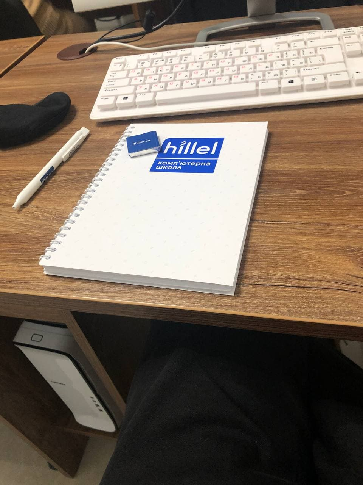

Сегодня был мой первый урок в hillel, я научился основным тегам html, таким как:
заголовки разного уровня
Параграфы и перенос строки,
с помощью тега br.
Научились стилезировать текст, с помощью HTML, делать его жирным,курсивным,а так же, делать его курсивным и важным для браузера и соответственно жирным и не менее важным.
- Изучили не нумерованный список
- и конечно же, нумерованный
- Определения
- и их значения
Можем писать в верхнем регистре,или в нижнем,зачеркивать текст, делать ссылки, прописывая абсолютный путь, или относительный.
Забыл, еще мы умеем рисовать горизонтальную линию
Ну и картиночки 